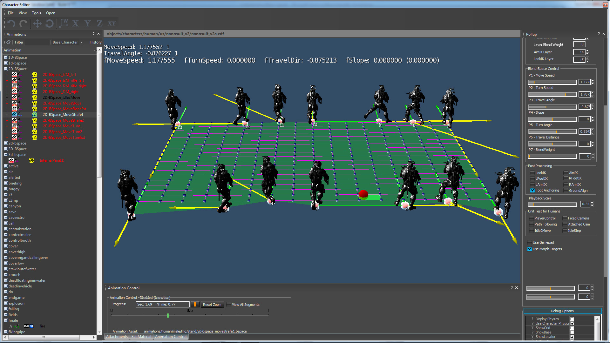
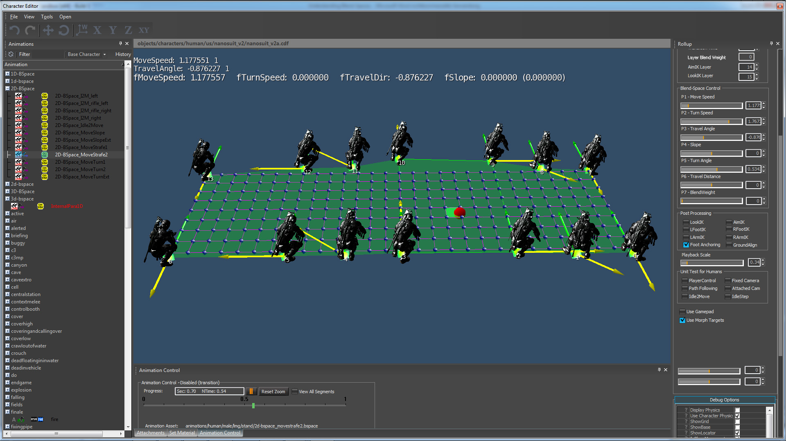

2D-Blend Spaces Overview
So far we were able to change only one single parameter at a time. But there are many cases in a game where it is required to smoothly change two aspects of a motion both simultaneously and independently. This means when we change one parameter, the other parameter stays constant and vice versa.
Chapters:
2D-BSpace_MoveTurn1.bspace
A classical example for a 2D blend space could be a character who moves at different speeds (i.e. slow, fast, sprint) and also changes his body orientation (i.e. turn left/right at different speeds) while he moves. When we change the speed, we don't want to change the turn-radius and when we change the turn-radius it should have no impact on the speed.

<ParaGroup>
<Dimensions>
<Param name="MoveSpeed" min="+0.2" max="+9.5" cells="19"/>
<Param name="TurnSpeed" min="-3.5" max="+3.5" cells="19"/>
</Dimensions>
<ExampleList>
<Example AName="stand_tac_walk_rifle_fwd_slow_3p_01" /> //move foward
<Example AName="stand_tac_run_rifle_fwd_slow_3p_01" /> //move foward
<Example AName="stand_tac_run_rifle_fwd_fast_3p_01" /> //move foward
<Example AName="stand_tac_sprint_rifle_fwd_3p_01" /> //move foward
<Example AName="stand_tac_walkTurn_rifle_lft_slow_3p_01" /> //turn left
<Example AName="stand_tac_runTurn_rifle_lft_slow_3p_01" /> //turn left
<Example AName="stand_tac_runTurn_rifle_lft_fast_3p_01" /> //turn left
<Example AName="stand_tac_walkTurn_rifle_rgt_slow_3p_01" /> //turn right
<Example AName="stand_tac_runTurn_rifle_rgt_slow_3p_01" /> //turn right
<Example AName="stand_tac_runTurn_rifle_rgt_fast_3p_01" /> //turn right
</ExampleList>
<Blendable>
<Face p0="0" p1="1" p2="5" p3="4" />
<Face p0="0" p1="7" p2="8" p3="1" />
<Face p0="1" p1="2" p2="6" p3="5" />
<Face p0="1" p1="8" p2="9" p3="2" />
<Face p0="2" p1="9" p2="3" />
<Face p0="2" p1="3" p2="6" />
</Blendable>
</ParaGroup> A simple way to do this is to extract the "MoveSpeed" and the "TurnSpeed" as independent values out of the root-motion and place the move-speed on the x-axis and the turn-speed on the y-axis of a coordinate system. This is handled by the following lines in the XML.
<Dimensions>
<Param name="MoveSpeed" min="+0.2" max="+9.5" cells="19"/> //place move-speed automatically on the x-axis
<Param name="TurnSpeed" min="-3.5" max="+3.5" cells="19"/> //place turn-speed automatically on the y-axis
</Dimensions> The association between motion-parameters and coordinate axes is simple: The 1st parameter is always placed on the x-axis, the 2nd parameter is placed on the y-axis, and the 3rd parameter goes to the z-axis. We could use "TurnSpeed" as the first parameter in the list to place it on the x-axis.
Because this is 2D space we have to annotate the space with faces. We use triangles to blend between three animations and quads to blend between four animations.
<Blendable>
<Face p0="0" p1="1" p2="5" p3="4" /> //quat
<Face p0="0" p1="7" p2="8" p3="1" /> //quat
<Face p0="1" p1="2" p2="6" p3="5" /> //quat
<Face p0="1" p1="8" p2="9" p3="2" /> //quat
<Face p0="2" p1="9" p2="3" /> //triangle
<Face p0="2" p1="3" p2="6" /> //triangle
</Blendable>General rule for 2D annotations: if you look from birds-eye view onto the blend-space in CharEdit, then all annotations happen counter-clockwise for triangles and quads. Triangles are not allowed to have overlapping points. Quads are not allowed to have overlapping points or a twisted shape.
2D-BSpace_MoveSlope.bspace
In the same way we did the MoveTurn, we can also build MoveSlope. When we change the speed, we don't want to change the slope-angle and when we change the slope-angle it should have no impact on the speed.
2D-BSpace_MoveTurn2.bspace
The previous blend-space had a large area that was not covered by real examples. If you move the cursor into such an area then the blending behaviors are undefined. Since SDK3.5.2, all blend-space types support automatic extrapolation (which means the system is talking the closest annotation and extends it) but it is not recommended to rely on it. A much better way is to use extrapolated pseudo-examples to cover the whole space.
<ExamplePseudo>
<Pseudo p0="1" p1="0" w0="-1.0" w1="2.0" />
<Pseudo p0="0" p1="4" w0="-2.2" w1="3.2" />
<Pseudo p0="0" p1="7" w0="-2.0" w1="3.0" />
<Pseudo p0="1" p1="5" w0="-0.5" w1="1.5" />
<Pseudo p0="1" p1="8" w0="-0.8" w1="1.8" />
<Pseudo p0="2" p1="6" w0="-0.5" w1="1.5" />
<Pseudo p0="2" p1="9" w0="-0.5" w1="1.5" />
<Pseudo p0="2" p1="3" w0="-2.0" w1="3.0" />
</ExamplePseudo> This is also a good case to observe how extrapolated pseudo examples work. Just move the cursor into a corner of the blend-space, i.e. MoveSpeed 10m/sec and TurnSpeed 3.14rad/sec. You can see that the strides are much wider and the upper body swings like crazy. This is an extremely exaggerated version of real examples. Such an effect is not possible with a pseudo example where you simply change the playback speed.
2D-BSpace_I2M_left.bspace
It's also possible to have Idle2Moves with different speeds. In the next example we can blend between walkStart and runStart when doing a transition into a walk or run. This XML also uses a combination of real examples and a scaled example to cover the whole blend-space. 
<ParaGroup>
<VEGPARAMS Idle2Move="1" />
<Dimensions>
<Param name="MoveSpeed" min="+.50" max="+6.00" cells="9" JointName="Bip01 Root" skey="0.9" ekey="1.0"/>
<Param name="TurnAngle" min="0.00" max="+3.15" cells="9" JointName="Bip01 Root" skey="0.0" ekey="1.0" locked="1" deltaextraction="1"/>
</Dimensions>
<AdditionalExtraction>
<Param name="TravelAngle" />
</AdditionalExtraction>
<ExampleList>
<Example AName="stand_tac_walkStart_rifle_fwd_slow_lf_3p_01" PlaybackScale="0.15" />
<Example AName="stand_tac_walkStart_rifle_lft_slow_lf_3p_01" PlaybackScale="0.15" />
<Example AName="stand_tac_walkStart_rifle_rev_slow_lf_3p_01" PlaybackScale="0.15" />
<Example AName="stand_tac_walkStart_rifle_fwd_slow_lf_3p_01" PlaybackScale="1.00" />
<Example AName="stand_tac_walkStart_rifle_lft_slow_lf_3p_01" PlaybackScale="1.00" />
<Example AName="stand_tac_walkStart_rifle_rev_slow_lf_3p_01" PlaybackScale="1.00" />
<Example AName="stand_tac_runStart_rifle_fwd_fast_lf_3p_01" PlaybackScale="1.00" />
<Example AName="stand_tac_runStart_rifle_lft_fast_lf_3p_01" PlaybackScale="1.00" />
<Example AName="stand_tac_runStart_rifle_rev_fast_lf_3p_01" PlaybackScale="1.00" />
<Example AName="stand_tac_runStart_rifle_fwd_fast_lf_3p_01" PlaybackScale="1.40" />
<Example AName="stand_tac_runStart_rifle_lft_fast_lf_3p_01" PlaybackScale="1.60" />
<Example AName="stand_tac_runStart_rifle_rev_fast_lf_3p_01" PlaybackScale="1.70" />
</ExampleList>
<Blendable>
<Face p0="1" p1="4" p2="5" p3="2" />
<Face p0="0" p1="3" p2="4" p3="1" />
<Face p0="4" p1="7" p2="8" p3="5" />
<Face p0="3" p1="6" p2="7" p3="4" />
<Face p0="7" p1="10" p2="11" p3="8" />
<Face p0="6" p1="9" p2="10" p3="7" />
</Blendable>
</ParaGroup> One interesting aspect in this XML is the parameter next to "MoveSpeed". An idle 2 move animation has no constant velocity. It starts at 0.0f (because the first pose is an idle pose) and ends at the maximum velocity. The purpose is to create a natural transition into an animation (or a blend-space) with a known velocity. With skey="0.9" and ekey="1.0". We evaluate only the last 10% of the root motion which (if created in a correct way) has the target velocity. The parameter JointName="Bip01 Root" is the name of the root joint, which is our default joint.
<Dimensions>
<Param name="MoveSpeed" min="+.50" max="+6.00" cells="9" JointName="Bip01 Root" skey="0.9" ekey="1.0"/>
<Param name="TurnAngle" min="0.00" max="+3.15" cells="9" JointName="Bip01 Root" skey="0.0" ekey="1.0" locked="1" deltaextraction="1"/>
</Dimensions> 2D-BSpace_MoveStrafe1.bspace
Another example for a 2D blend space is a character who moves at different speeds (i.e. slow, fast, sprint) and also changes his move orientation (i.e. forward/left/right/backwards) while he moves. When we change the speed, we don't want to change the move-direction and when we change the move-direction it should have no impact on the speed.

<ParaGroup>
<Dimensions>
<Param name="MoveSpeed" min="+1.0" max="+4.5" cells="19" />
<Param name="TravelAngle" min="-3.14" max="+3.14" cells="17" />
</Dimensions>
<ExampleList>
<Example AName="stand_tac_walk_rifle_bwd_slow_3p_01" SetPara1="-3.141" />
<Example AName="stand_tac_walkCross_rifle_bRgt_slow_3p_01" />
<Example AName="stand_tac_walkStr_rifle_rgt_slow_3p_01" />
<Example AName="stand_tac_walk_rifle_fwd_slow_3p_01" />
<Example AName="stand_tac_walkCross_rifle_fLft_slow_3p_01" />
<Example AName="stand_tac_walkStr_rifle_lft_slow_3p_01" />
<Example AName="stand_tac_walk_rifle_bwd_slow_3p_01" SetPara1="+3.141" />
<Example AName="stand_tac_run_rifle_bwd_fast_3p_01" SetPara1="-3.141" />
<Example AName="stand_tac_runCross_rifle_bRgt_fast_3p_01" />
<Example AName="stand_tac_runStr_rifle_rgt_fast_3p_01" />
<Example AName="stand_tac_run_rifle_fwd_fast_3p_01" />
<Example AName="stand_tac_runCross_rifle_fLft_fast_3p_01" />
<Example AName="stand_tac_runStr_rifle_lft_fast_3p_01" />
<Example AName="stand_tac_run_rifle_bwd_fast_3p_01" SetPara1="+3.141" />
</ExampleList>
<Blendable>
<Face p0=" 0" p1=" 7" p2=" 8" p3=" 1" />
<Face p0=" 1" p1=" 8" p2=" 9" p3=" 2" />
<Face p0=" 2" p1=" 9" p2="10" p3=" 3" />
<Face p0=" 3" p1="10" p2="11" p3=" 4" />
<Face p0=" 4" p1="11" p2="12" p3=" 5" />
<Face p0=" 5" p1="12" p2="13" p3=" 6" />
</Blendable>
</ParaGroup>For this blend we use 6 walk-directions (=slow-motion) and 6 run-directions (=fast-motion). Then we extract the "MoveSpeed" and the "TravelAngle" as independent values out of the root-motion and place the move-speed on the x-axis and the travel-angle on the y-axis of a coordinate system. This is handled by the following lines in the XML.
<Dimensions>
<Param name="MoveSpeed" min="+1.0" max="+4.5" cells="19" />
<Param name="TravelAngle" min="-3.14" max="+3.14" cells="17" />
</Dimensions> 2D-BSpace_MoveStrafe2.bspace
In the previous strafe example we had walk and run assets for different speeds. Sometimes you need only a slight variations of move-speeds where the visual difference in the assets is so small that you don't want to create new assets. In this example we took the crouch strafe and use PlaybackScale to create a pseudo assets with different move-speeds. So every asset is used twice, but with a different speed. Because the duplicated assets also have different positions in the space, we can use them to build a blend space with 2 dimensions. With this simple trick we can generate move-speeds between 0.2m/sec and 2.5m/sec by scaling the speed of original assets.

<ParaGroup>
<Dimensions>
<Param name="MoveSpeed" min="+0.20" max="+2.50" cells="9" />
<Param name="TravelAngle" min="-3.14" max="+3.14" cells="29" />
</Dimensions>
<ExampleList>
<Example AName="crouch_tac_walk_rifle_bwd_slow_3p_01" SetPara1="-3.147" PlaybackScale="0.15" />
<Example AName="crouch_tac_walkCross_rifle_bRgt_slow_3p_01" PlaybackScale="0.15"/>
<Example AName="crouch_tac_walkStr_rifle_rgt_slow_3p_01" PlaybackScale="0.15" />
<Example AName="crouch_tac_walk_rifle_fwd_slow_3p_01" PlaybackScale="0.15" />
<Example AName="crouch_tac_walkCross_rifle_fLft_slow_3p_01" PlaybackScale="0.15" />
<Example AName="crouch_tac_walkStr_rifle_lft_slow_3p_01" PlaybackScale="0.15" />
<Example AName="crouch_tac_walk_rifle_bwd_slow_3p_01" SetPara1="+3.147" PlaybackScale="0.15" />
<Example AName="crouch_tac_walk_rifle_bwd_slow_3p_01" SetPara1="-3.147" PlaybackScale="4.50" />
<Example AName="crouch_tac_walkCross_rifle_bRgt_slow_3p_01" PlaybackScale="6.00" />
<Example AName="crouch_tac_walkStr_rifle_rgt_slow_3p_01" PlaybackScale="3.50" />
<Example AName="crouch_tac_walk_rifle_fwd_slow_3p_01" PlaybackScale="3.40" />
<Example AName="crouch_tac_walkCross_rifle_fLft_slow_3p_01" PlaybackScale="4.40" />
<Example AName="crouch_tac_walkStr_rifle_lft_slow_3p_01" PlaybackScale="4.40" />
<Example AName="crouch_tac_walk_rifle_bwd_slow_3p_01" SetPara1="+3.147" PlaybackScale="4.40" />
</ExampleList>
<Blendable>
<Face p0="6" p1="5" p2="12" p3="13" />
<Face p0="5" p1="4" p2="11" p3="12" />
<Face p0="4" p1="3" p2="10" p3="11" />
<Face p0="3" p1="2" p2="9" p3="10" />
<Face p0="2" p1="1" p2="8" p3="9" />
<Face p0="1" p1="0" p2="7" p3="8" />
</Blendable>
</ParaGroup>